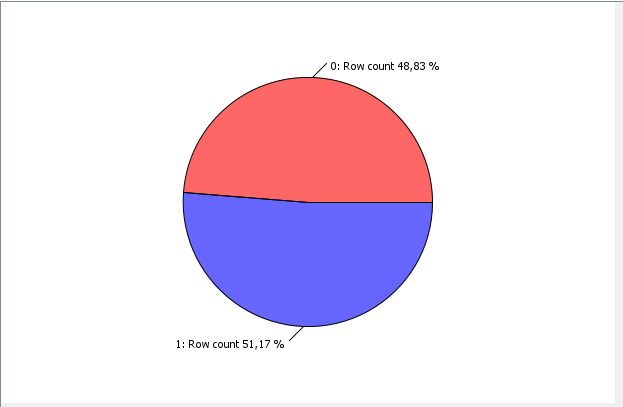

Les graphiques
Répartition hommes / femmes
Il y a un peu plus d’hommes que de femmes.
Répartion hommes / femmes par contrat
Il y a plus d’hommes en CDI et plus de femmes en CDD.
Répartion hommes / femmes par services
La répartition par service est assez inégale.
Répartion hommes / femmes par promotion

Il y a un peu plus d’homme ayant obtenue des promotions.
Répartion hommes / femmes par augementation
Il y a un peu plus de femmes ayant obtenue des augmentations.
Répartion hommes / femmes par rémunération
Les répartition de salaire entre hommes et femmes sont relativement égalitaires.
Répartion hommes / femmes par accident de travail
Les hommes ont un peu plus d’accident de travail que les femmes.
Répartion hommes / femmes par durée hebdomadaire
Les hommes ont un peu plus de temps de temps plein que les femmes.
Répartion hommes / femmes par distance travail / maison
La répartition est inégale.
Retour sur la page principale